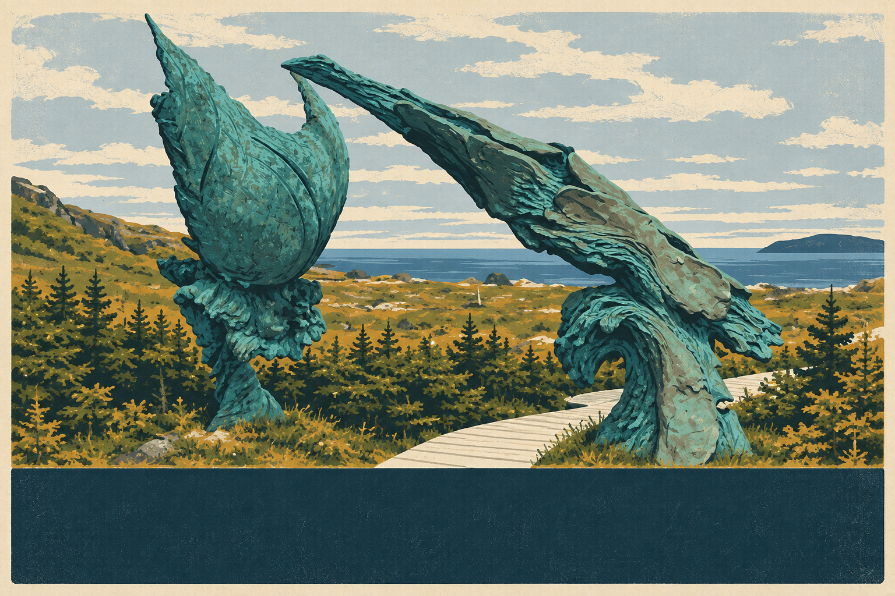

Postcard style study
A reusable travel-poster system for Aunt Liv’s route. This first front uses the “Meeting of Two Worlds” sculpture at L’Anse aux Meadows.

L’ANSE AUX MEADOWSNEWFOUNDLAND AND LABRADOR
Reusable rules
- Landscape 3:2 format with one dominant landmark.
- Flat, screen-printed colour layers; simplified shapes; visible paper grain.
- Five or six colours chosen from the destination.
- Dark lower title band, large place name, smaller region line.
- No tourism logos. Keep puzzle clues separate from the location title.
Atlantic palette
Paper
#EFE3C4
#EFE3C4
Atlantic
#12343C
#12343C
Patina
#2F7775
#2F7775
Fog
#AEBFC0
#AEBFC0
Spruce
#25473B
#25473B
Ochre
#B58631
#B58631
Artwork adapted from a photograph by D. Gordon E. Robertson, licensed CC BY-SA 3.0. The adaptation is shared under the same license. Visual direction informed by the broad characteristics of contemporary Canadian travel posters; no Parks Canada marks are used.